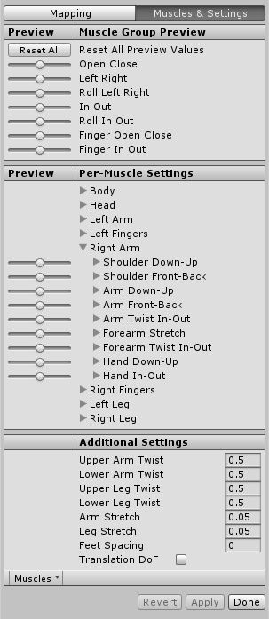

Avatar Muscle & Settings tab
Unity's animation system allows you to control the range of motion of different bones using Muscles.
Once the Avatar has been properly configured, the animation system "understands" the bone structure and allows you to start using the Muscles & Settings tab of the Avatar's Inspector. Use the Muscles & Settings tab to tweak the character's range of motion and ensure the character deforms in a convincing way, free from visual artifacts or self-overlaps.

The areas of the Muscle & Settings tab include:
- (A) Buttons to toggle between the Mapping and Muscles & Settings tabs. You must Apply or Revert any changes made before switching between tabs.
- (B) Use the Muscle Group Preview area to manipulate the character using predefined deformations. These affect several bones at once.
- (C) Use the Per-Muscle Settings area to adjust individual bones in the body. You can expand the muscle settings to change the range limits of each settings. For example, by default, Unity gives the Head-Nod and Head-Tilt settings a possible range of -40 to 40 degrees but you can decrease these ranges even further to add stiffness to these movements.
- (D) Use the Additional Settings to adjust specific effects in the body.
- (E) The Muscles menu provides a Reset tool to return all muscle settings to their default values.
- (F) Buttons to accept any changes made (Accept), discard any changes (Revert), and leave the Avatar window (Done). You must Apply or Revert any changes made before leaving the Avatar window.
Previewing changes
For the settings in the Muscle Group Preview and Per-Muscle Settings areas, you can preview the changes right in the Scene view. You can drag the sliders left and right to see the range of movement for each setting applied to your character:

You can see the bones of the skeleton through the Mesh.
Translate Degree of Freedom (DoF)
You can enable the Translate DoF option in the Additional Settings to enable translation animations for the humanoid. If this option is disabled, Unity animates the bones using only rotations. Translation DoF is available for Chest, UpperChest, Neck, LeftUpperLeg, RightUpperLeg, LeftShoulder and RightShoulder muscles.
Note: Enabling Translate DoF can increase performance requirements, because the animation system needs to perform an extra step to retarget humanoid animation. For this reason, you should only enable this option if you know your animation contains animated translations of some of the bones in your character.